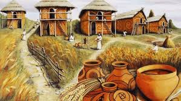
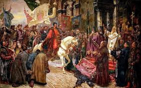
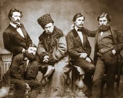
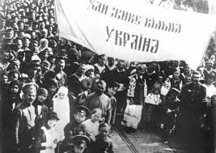

Модуль 1. Давня історія

Трипільська культура, кіммерійці, скіфи, сармати, виникнення слов’янських племен і Київської Русі.
Цей курс створено для всіх, хто прагне краще пізнати історію України — від Трипільської культури до сучасної незалежної держави. Матеріали викладено зрозуміло, з прикладами, картами, цитатами з історичних джерел та інтерактивними тестами.

Трипільська культура, кіммерійці, скіфи, сармати, виникнення слов’янських племен і Київської Русі.

Формування козацтва, Запорозька Січ, визвольна війна Богдана Хмельницького, Гетьманщина.

Національне відродження, революції, формування політичних рухів, Українська Народна Республіка.

Утворення УРСР, репресії, Голодомор, Друга світова війна, рух опору, дисидентство.